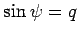

Inhalt Index DeskTop Bronstein

 Differentialgleichungen Partielle Differentialgleichungen Nichtlineare partielle Differentialgleichungen, Solitonen Sinus-Gordon-Gleichung
Differentialgleichungen Partielle Differentialgleichungen Nichtlineare partielle Differentialgleichungen, Solitonen Sinus-Gordon-Gleichung


Die SG-Gleichung für die Evolutionsfunktion u lautet
Sie besitzt die folgenden Solitonlösungen:
wobei und -1<v<+1 gilt.
In der Abbildung ist das Kink-Soliton (9.142) der Gleichung (9.141) für v=1/2 dargestellt.
Das Kink-Soliton ist durch die zwei dimensionslosen Parameter v und x0 bestimmt, die Geschwindigkeit ist unabhängig von der Amplitude, die Zeit- und die Ortsableitung sind gewöhnliche lokalisierte Solitonen:
 |
(9.143) |
| (9.145) |
Weitere Lösungen von (9.141) sind:
| (9.146) |
| (9.147) |
Diese Gleichung (9.148) stellt eine stationäre Welle dar, deren Einhüllende mit der Frequenz  moduliert ist.
moduliert ist.
| (9.149a) |
Zwischen Wellenlänge  und Gitterkonstante k besteht die Beziehung
und Gitterkonstante k besteht die Beziehung
| (9.149b) |
Für und damit , also ergibt sich
| (9.149c) |
d.h. wieder das Kink-Soliton (9.142) und das Antikink-Soliton (9.144) mit .
Hinweis: Mit snx ist eine JACOBIsche elliptische Funktion mit dem Modul k und der Periode K bezeichnet:
| (9.150a) |
| (9.150c) |
Die Gleichung (9.150b) geht aus der inversen Funktion (14.102b) zum elliptischen Integral 1. Gattung durch die Substitution  hervor.
Die Reihenentwicklung des vollständigen elliptischen Integrals ist als Gleichung (8.104) angegeben.